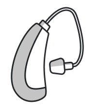
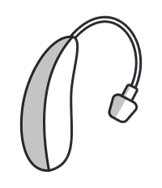
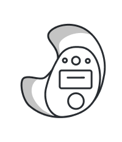

Hearing Aid Solutions
Learn about the latest hearing aid technology, types, and brands we carry to find the perfect fit for your lifestyle.
Understanding Hearing Aids
A hearing aid is a small electronic device that you wear in or behind your ear. It makes some sounds louder so that a person with hearing loss can listen, communicate, and participate more fully in daily activities. A hearing aid has three basic parts: a microphone, an amplifier/processor, and a receiver (speaker).
The microphone picks up sounds from your environment and converts them into electrical signals. Modern hearing aids use multiple microphones to help distinguish speech from background noise, automatically adjusting to focus on the sounds that matter most to you.
The processor is the brain of the hearing aid. It analyzes, digitizes, and amplifies the electrical signals from the microphone. Today’s digital processors can distinguish between different types of sounds, reduce noise, enhance speech, and adjust automatically to different listening environments — all in real time.
The receiver converts the processed electrical signals back into sound and delivers them into your ear canal. The quality of the receiver directly impacts how natural and comfortable the amplified sounds feel, making it one of the most important components of a hearing aid.
Technology
Today’s hearing aids are sophisticated devices packed with features that go far beyond simple amplification.
Stream phone calls, music, podcasts, and TV audio directly to your hearing aids from your smartphone, tablet, or TV. Bluetooth hearing aids essentially turn your hearing devices into wireless earbuds, letting you enjoy clear, high-quality audio without any additional accessories. Many models also work with companion apps that give you direct control over volume, programs, and settings from your phone.
Advanced digital noise reduction technology analyzes the sounds around you in real time and reduces unwanted background noise — like the hum of a restaurant, traffic, or wind — while preserving and enhancing speech. This makes it significantly easier to follow conversations in noisy environments, which is one of the most common challenges for people with hearing loss.
Directional microphone systems use two or more microphones to determine where sounds are coming from. They can automatically focus on the speaker in front of you while reducing sounds from the sides and behind. This technology is especially helpful in group conversations, meetings, and busy social situations where you need to focus on one voice among many.
When you wear two hearing aids, they can communicate wirelessly with each other, sharing data about your sound environment. This ear-to-ear synchronization ensures balanced sound processing, meaning when you adjust the volume on one aid, the other adjusts too. This creates a more natural and immersive hearing experience, similar to how healthy ears work together.
Some of the latest hearing aids double as health tracking devices. They can monitor steps taken, physical activity, and even track social engagement (how many hours you spend in conversation). Certain models include fall detection and can send automatic alerts to designated contacts. These features transform hearing aids from simple amplification devices into comprehensive wellness tools.
Rechargeable hearing aids eliminate the hassle of changing tiny disposable batteries every few days. Simply place your hearing aids in their charging case overnight and wake up to a full day’s charge. Most rechargeable models provide 24+ hours of use on a single charge, and the charging cases are compact and portable enough to take anywhere.
Modern hearing aids use artificial intelligence (AI) to make listening easier and more natural in a wide variety of environments. AI-powered technology can automatically recognize different listening situations—such as conversations, background noise, music, or outdoor environments—and adjust the hearing aid settings in real time.
This intelligent processing helps improve speech clarity, reduce background noise, and enhance overall sound quality without requiring manual adjustments. Many AI-enabled hearing aids also learn from your listening preferences over time, allowing the devices to personalize sound based on your daily environments and lifestyle.
With AI technology, hearing aids are becoming smarter, more adaptive, and better at helping people stay connected to the conversations and sounds that matter most.
Styles & Fit
We offer a range of styles to fit your hearing needs, lifestyle, and preferences. Your audiologist will help you choose the best option.

The BTE hearing aid sits comfortably behind the ear with a custom-fitted ear mold or thin tube that directs sound into the ear canal. BTEs are suitable for nearly all types of hearing loss, from mild to profound. They are durable, easy to handle, and can accommodate larger batteries for longer life. BTE aids are often recommended for children because the ear molds can be replaced as the child grows, while the hearing aid itself remains the same.

Similar to BTE hearing aids but smaller and more discreet. The receiver (speaker) is placed directly inside the ear canal rather than in the housing behind the ear. This design provides a more natural sound quality and reduces the “plugged up” feeling some wearers experience. RIC aids are the most popular style today due to their combination of comfort, discretion, and excellent sound quality. Ideal for mild to severe hearing loss.

Custom-molded to fit within the outer portion of the ear, ITE hearing aids are easy to insert and remove. They can house larger batteries and more features than smaller in-canal styles. ITEs are appropriate for mild to severe hearing loss and are a popular choice for those who want easy handling without the behind-the-ear component. Each ITE is custom-made from an impression of your ear for a perfect fit.
A variation of the BTE design that keeps the ear canal open using a thin tube and a small, non-occluding tip. This allows low-frequency sounds to enter the ear naturally while the hearing aid amplifies high-frequency sounds. Open-fit aids are comfortable, reduce the sensation of hearing your own voice too loudly, and are ideal for mild to moderate high-frequency hearing loss.
ITC hearing aids fit partly in the ear canal, while CIC models fit entirely inside the canal — making them nearly invisible. These custom-molded devices are ideal for people who want maximum discretion. CIC aids are best suited for mild to moderate hearing loss. Due to their small size, they use smaller batteries and may have fewer features, but they offer excellent cosmetic appeal.
Extended-wear hearing aids are placed deep in the ear canal by your audiologist and can be worn continuously for weeks or even months at a time — including while sleeping, showering, and exercising. They are completely invisible to others. Because they sit close to the eardrum, they provide natural sound quality and require no daily insertion or removal. A great option for those who want a “set it and forget it” solution.
Top Brands
We work with leading manufacturers to ensure you have access to the best hearing technology available.
A pioneer in smart hearing technology, ReSound was the first to introduce direct Bluetooth streaming to hearing aids. Known for natural sound quality and their innovative Smart 3D app that gives users fine-tuned control over their listening experience. Their ReSound ONE model delivers a personalized hearing experience with an additional microphone placed inside the ear canal.
One of the world’s most trusted hearing aid brands, Phonak is known for exceptional speech understanding in noise, universal Bluetooth connectivity (works with any phone), and rechargeable technology. Their Paradise and Lumity platforms offer outstanding sound quality, motion sensors that adapt to your activities, and the ability to connect to Roger microphones for challenging listening situations.
Widex hearing aids are renowned for their pure, natural sound quality. They were the first to introduce machine learning into hearing aids with their SoundSense Learn feature, which uses AI to create personalized sound settings based on your preferences. Widex is also a leader in tinnitus management with their unique Zen therapy program built into their hearing aids.
An American company known for innovation, Starkey was the first to integrate health monitoring features like fall detection, step counting, and brain health tracking into hearing aids. Their Evolv AI and Genesis AI platforms use artificial intelligence to deliver up to 55 million automatic adjustments per hour, ensuring optimal sound in every environment.
Signia excels at preserving the natural sound of your own voice with their Own Voice Processing (OVP) technology. Their Active and IX platforms offer sleek, modern designs with powerful performance. Signia also leads in telehealth capabilities, allowing your audiologist to make remote adjustments to your hearing aids from anywhere.
Oticon takes a brain-first approach to hearing, developing technology based on BrainHearing research. Their Real and Intent platforms use deep neural network (DNN) technology trained on 12 million real-life sound scenes to give your brain access to the full sound scene rather than just focusing on one speaker. This approach reduces listening effort and supports cognitive health.
Assistive Devices
We also offer captioned telephone products that display real-time captions of phone conversations — available at no cost to qualified individuals with hearing loss.
CaptionCall by Sorenson is a captioned telephone service that displays real-time captions of everything your caller says on a large, easy-to-read touchscreen. Using advanced voice recognition technology and trained captioning agents, CaptionCall delivers fast, accurate text so you can read along while you listen. The service includes a home phone with Bluetooth connectivity, speakerphone, captioned voicemail, and a mobile app for captioned calls on the go. Available at no cost to individuals with hearing loss through an FCC-funded program.
CapTel captioned telephones by Hamilton show word-for-word captions of everything your caller says during a phone conversation. You can listen to the caller while also reading the captions right on the display screen. CapTel offers several phone models — including touch-screen and large-display options with amplification up to 40dB — and a mobile app for captioned calls on your smartphone. Like CaptionCall, CapTel phones and service are available at no cost to eligible individuals with hearing loss through a federally funded program.
How We Help
From your first appointment through years of follow-up care, we’re with you every step of the way.
Your hearing journey starts with a phone call or online inquiry. Our friendly staff will schedule your appointment, answer any initial questions, and ensure you know what to expect during your visit. We take time to understand your concerns, lifestyle, and hearing goals before any testing begins.
We perform thorough diagnostic hearing evaluations using state-of-the-art equipment. Tests include pure-tone audiometry, speech-in-noise testing, tympanometry, and other assessments as needed. The results give us a complete picture of your hearing health and help us determine the best treatment options.
Based on your test results, our audiologists take time to explain your hearing profile in detail. We discuss all available options, demonstrate different hearing aid styles, and make recommendations tailored to your specific hearing loss, lifestyle needs, and budget. We never rush this process.
Once you’ve selected your hearing aids, we custom-program them using real-ear verification measurements to ensure they’re providing exactly the right amount of amplification for your specific hearing loss. Follow-up appointments allow us to fine-tune your settings as you adjust to hearing new sounds again.
We provide professional cleaning, maintenance, and repair services for all hearing aid brands. Many minor repairs can be completed in-office the same day. For more extensive repairs, we work directly with manufacturers to ensure quick turnaround. Regular maintenance visits help extend the life of your hearing aids and ensure optimal performance.
Our care doesn’t end when you walk out the door with your hearing aids. We schedule regular follow-up appointments to check your progress, make adjustments, and address any concerns. Our patients are always welcome to call or stop by with questions — building a lasting relationship is central to how we practice.
What to Expect
One thing no one tells you about new hearing aids is that your brain needs time to re-learn how to process sounds. When you’ve had hearing loss for months or years, your brain adapts to a quieter world. When hearing aids restore those sounds, everything can seem louder and different at first.
This adjustment period is completely normal and typically lasts 2–4 weeks. During this time, you may notice sounds you haven’t heard in a long time — the hum of your refrigerator, birds singing outside, the rustle of clothing. Your own voice may sound different.
We recommend wearing your hearing aids consistently during the adjustment period, starting in quieter environments and gradually introducing more complex sound situations. Your brain will adapt, and within a few weeks, these sounds will become natural and comfortable again.
We schedule follow-up appointments during this period to fine-tune your settings and address any concerns. Your comfort and satisfaction are our top priorities.
Tinnitus Relief
Yes — hearing aids are one of the most effective tools for managing tinnitus. Many people with tinnitus also have some degree of hearing loss, and by amplifying external sounds, hearing aids help mask or reduce the perception of tinnitus (the ringing, buzzing, or hissing in your ears).
Many modern hearing aids include built-in tinnitus masking features that generate soothing sounds — such as white noise, ocean waves, or other ambient sounds — directly into your ears. These sounds can provide significant relief and make tinnitus much less noticeable throughout the day.
Brands like Widex, ReSound, and Signia offer sophisticated tinnitus management programs within their hearing aids. During your consultation, we’ll assess your tinnitus and hearing loss together to recommend the best combination of amplification and sound therapy for your needs.
Learn More About Tinnitus TreatmentLongevity
On average, hearing aids last 3 to 5 years with proper care and maintenance. Several factors affect their lifespan, including how well they’re maintained, your body chemistry (earwax and moisture levels), how often they’re worn, and the environment they’re used in.
Regular professional cleaning and maintenance appointments can significantly extend the life of your hearing aids. We recommend coming in every 3–6 months for a professional check-up where we deep-clean your devices, check all components, and make any needed adjustments.
Even if your hearing aids are still functioning well after 5 years, hearing aid technology advances rapidly. Newer models often offer significantly improved sound processing, better noise reduction, more comfortable fits, and features like Bluetooth connectivity and health monitoring that weren’t available just a few years ago.
When it’s time to upgrade, we’ll help you evaluate the latest options and find the best solution for your current hearing needs and lifestyle.
Schedule a consultation with our experienced team to find the perfect hearing aids for your needs.